ARTISAN FOOD QUARTER
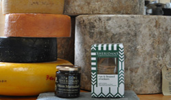
A celebration of delicious products from independent home-makers, garden growers, artisan bakers, gourmet tasters, liqueur lovers and cook-your-own enthusiasts. Expect a local market place with a flair for good food and beverages; expect a feast of proud pop-up stalls from across the Island of Ireland sharing their delicious wares and produce... to taste and to buy..
THE VOYAGE FROM TASTE TO ORIGIN
Similar to the slow food ethos, this educational area will provide an insight and understanding into where our food comes from, how it was produced and by whom.
By visiting this area, adults and children can learn how to combine pleasure and responsibility in daily choices, appreciate the cultural and social importance of choosing the right foods and understanding how it is made
THE FOOD ACADEMY
This area of the Real Food Zone will run a series of cooking demonstrations by leading food educators and chefs who will exhibit how to serve great quality and sustainably produced food on a budget.
Days : All weekend
Location : The Food Quarter
Food Demos : FRI 13:00, 15:00, 17:00
SAT 10:00, 11:00, 13:00, 15:00, 17:00
SUN 12:00, 13:30, 14:30, 15:30, 16:30, 17:00
Food Education : FRI 14:00, 16:00, 18:00
SAT 12:00, 14:00, 16:00, 18:00
SUN 13:00, 14:00, 15:00, 16:00
Exhibitors
-
 Big Red Kitchen
Big Red Kitchen -
 Chez Emily Chocolate Boutique
Chez Emily Chocolate Boutique - Coole Swan Liqueur Company
- 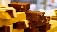Man of Aran Fudge
- 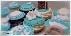Bakelicious
- 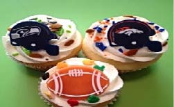Pixie Dust Cupcakes
- 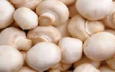Kerrigan’s Mushrooms
- 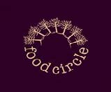Slane Food Circle
- 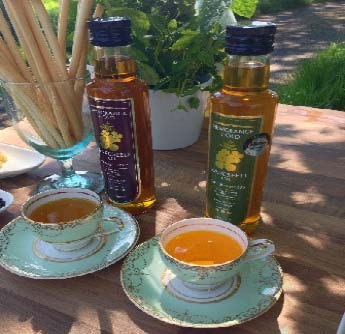Newgrange Oils
- 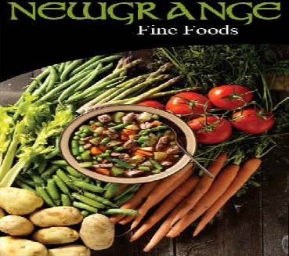Newgrange Fine Foods
- 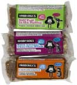Brodericks
- Blast on Wilde (flavoured Butters)
- 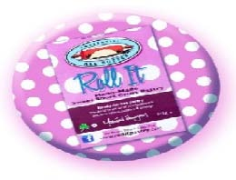Roll It Pastry
- 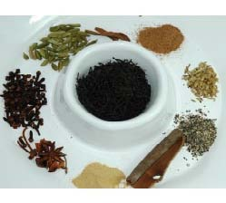Lily’s Tea Shop
- 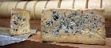Bellingham Blue
- 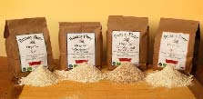Dunany Flour
- 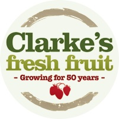Clarkes Fresh Fruit
- 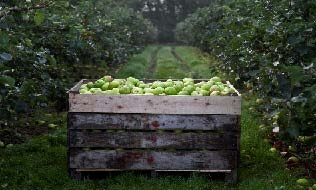Boynegrove farm
- 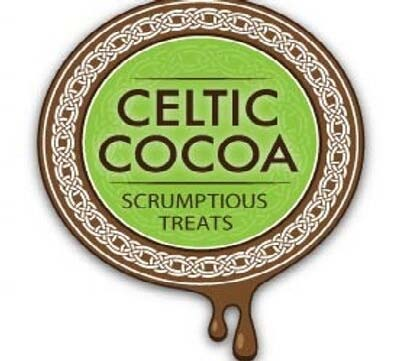Celtic Cocoa
-
 Brown Hound Bakery
Brown Hound Bakery - 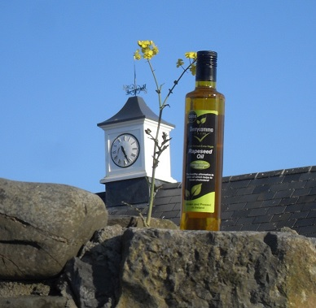Derrycamma Farm
- 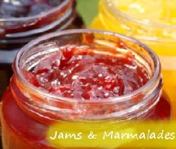Morans Homestore